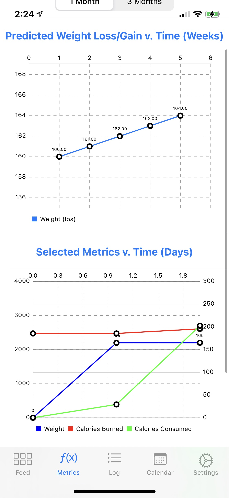
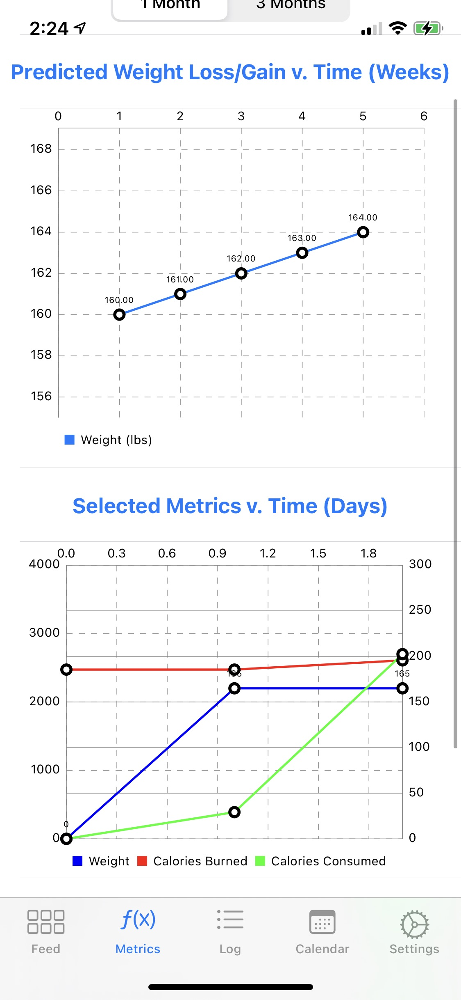

Unsupervised Learning for Particle Tracking @ Large Hadron Collider
CERN | Researcher, PI: Professor Ashutosh Kotwal
During my gap years, I self-studied physics with the goal of returning to college and pursuing a lifelong dream of exploring fundamental questions about our universe. This dream was realized when I joined Professor Ashutosh Kotwal's research group, which investigates potential dark matter signatures at the Large Hadron Collider (LHC).
The LHC creates high-energy proton collisions, generating thousands of particle fragments detected by cylindrical arrays of pixel sensors. Identifying metastable particles, potential indicators of dark matter, within this immense data volume is computationally challenging—existing CPUs cannot process collision data quickly enough. To address this, I designed an FPGA-based AI algorithm that significantly accelerates real-time identification of these critical particle trajectories through graph-computing and unsupervised learning techniques.

Examples of the track-finding ability of the algorithm, demonstrated on simulated data. The C code used for FPGA synthesis is executed as software to emulate the algorithm's hardware results. The red points represent the hits associated with the high-momentum particle of interest, and the blue points represent hits from random noise. The red curve shows the trajectory identified by the algorithm. The embedded particle has a transverse momentum of 10 GeV/c and traverses an axial magnetic field of 2 T.
Our solution achieved an unprecedented throughput of less than 25 nanoseconds per event, a thousand-fold improvement over existing LHC capabilities. This work culminated in my co-authoring a paper published in Nature Scientific Reports, marking a meaningful step towards enabling new physics discoveries at the LHC.

 
